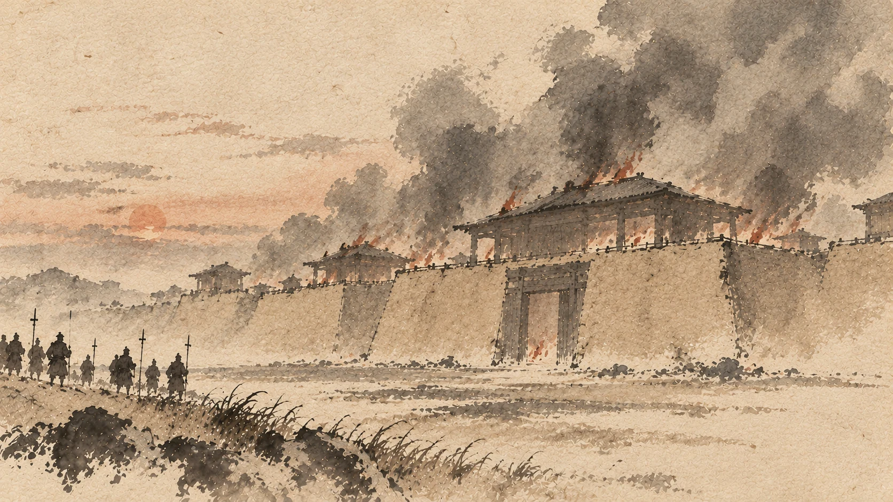
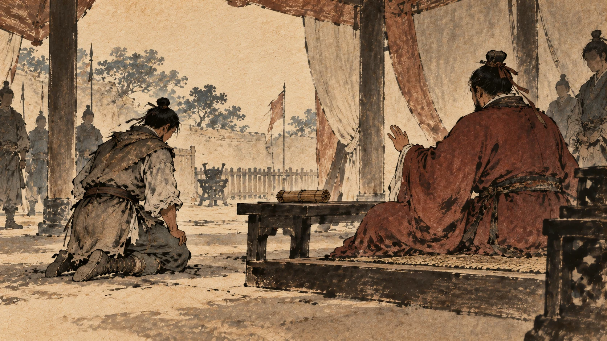
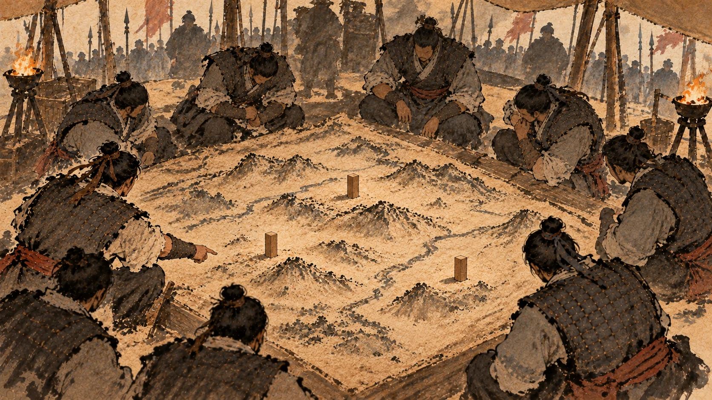
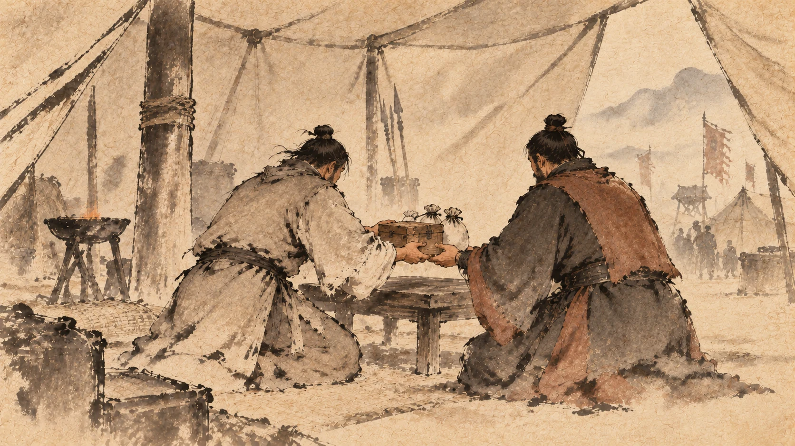
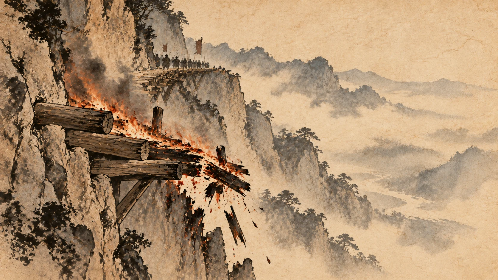
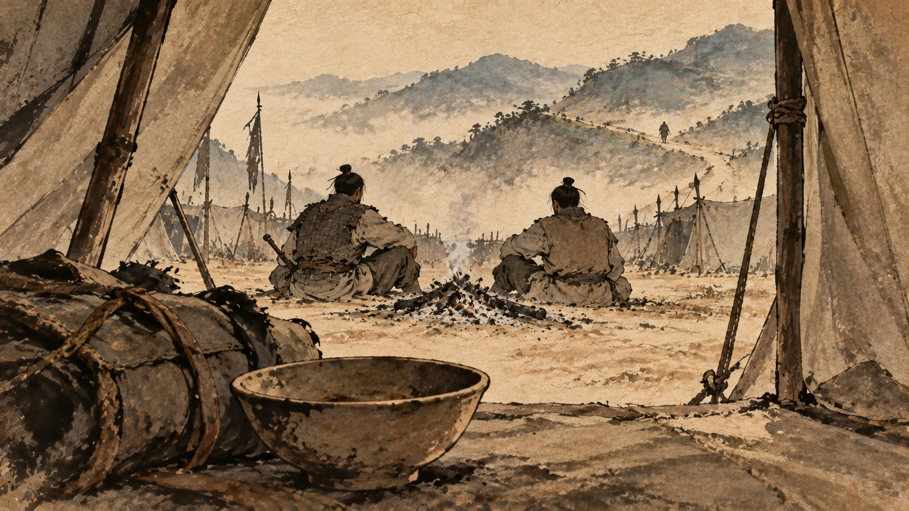

分封与汉中：为什么刘邦成了汉王
一、项羽进了咸阳

鸿门宴之后几天，项羽带兵进了咸阳。
《史记》用了很短的一段，你可以跟第六章对着读：
屠咸阳，杀秦降王子婴，烧秦宫室，火三月不灭；收其货宝妇女而东。①
屠城，杀了已经投降的秦王子婴，烧掉秦朝的宫室，火三个月没灭；把财货和妇女收走，往东去了。
第六章里，刘邦进咸阳干的是三件事：封府库、退军霸上、约法三章。秦地的人最后是“唯恐沛公不为秦王”。
而项羽在这里干的是屠城、杀降王、烧宫殿。
有人劝项羽留下：关中阻山河四塞，地肥饶，可都以霸。
关中四面有山河做屏障，土地肥沃，可以在这里建都称霸。②
项羽的回答是一句后来很有名的话：
富贵不归故乡，如衣绣夜行，谁知之者！
富贵了不回故乡，就像穿着锦绣衣服在夜里走路，谁知道呢？③
劝他的人说了一句给后世留了成语的话：人言楚人沐猴而冠耳，果然。
人家说楚人就像猕猴戴帽子——看着像个人，其实不是。果然如此。④
项羽听说了，把这个人煮了。
这一段的每一句，都可以跟第六章对着读。同样是进了咸阳，一个把宫殿封了起来，一个把宫殿烧了；一个说“我要在这里管事”，一个说“我要回老家让人看看”。
二、义帝这道题

有一件事必须先处理：那位放羊出身的楚怀王。
项羽派人去向怀王请示。怀王的回答是两个字：如约。
按原先的约定办——就是“先入定关中者王之”。⑤
这两个字说得没有任何错处。怀王从头到尾都没有错。但项羽记下了这笔账。
接下来项羽做的第一件事是升级怀王：乃尊怀王为义帝。
尊为“义帝”——听着更尊贵了，实际上从“楚王”变成“天下的帝”，反而被架到了一个虚位上。《史记》把这层意思写得很直白：实不用其命。
名义上尊他，实际上不用听他的。⑥
然后项羽对诸将讲了一段话，这段话是他自己给自己发的许可证：
天下初发难时，假立诸侯后以伐秦。然身被坚执锐首事，暴露于野三年，灭秦定天下者，皆将相诸君与籍之力也。义帝虽无功，故当分其地而王之。
当初天下刚起事的时候，是暂且立了六国的后人来讨伐秦。可是穿着铠甲、拿着兵器，风餐露宿三年，灭秦定天下的，是诸位将相和我的力量。义帝虽然没有功劳，还是该分他的地让他称王。⑦
这段话要读两遍。
第一句是把“立六国后人”降格为“权宜之计”——这一句把从陈胜到项梁那一整段的历史全部改写了：你们当年立楚怀王，不是尊重他，是用他。
第二句才是真话：灭秦出力的是我们，所以该由我们来分天下。
诸将都说：善。
三、分天下

于是项羽开始分。
他自己先拿最大的一份：项王自立为西楚霸王，王九郡，都彭城。⑧
九郡，都城在彭城——也就是今天的徐州。他选了东边最好的一块，回老家去了。
然后他封了十八个王。这里我只讲跟后面故事有关的那几个。
关中，被切成三块，分给了三个秦朝的降将。
章邯为雍王，管咸阳以西，都城废丘。
司马欣为塞王，管咸阳以东到黄河，都城栎阳。
董翳为翟王，管上郡，都城高奴。⑨
为什么要分三块？《史记》写过一句实话：三分关中，王秦降将以距塞汉王。
把秦朝降将分成三个王，用来堵住刘邦。⑩
而这三个人，就是第五章里在新安跟着章邯投降、看着二十多万秦人在夜里被坑杀的那几个。
把三个被秦地人恨透的降将封在秦地，用来挡住刘邦——这个安排后来会付出代价。第九章里会有人把这笔账算清楚。
另外还有一大批：魏王豹改封西魏王，赵王歇改封代王，赵相张耳封常山王，黥布封九江王，吴芮封衡山王，臧荼封燕王，申阳封河南王，司马卬封殷王，共敖封临江王……
还有一个特别受刺激的人：成安君陈馀。
陈馀跟张耳本来是生死之交，后来翻了脸。陈馀没有跟着入关，项羽就只给他三个县，在一边放着。而张耳封了王。⑪
这个安排会在几个月后炸掉。
四、为什么刘邦在巴蜀
刘邦拿到的，是刘邦自己最不愿意要的那一份。
《史记》把这件事的算计写得很清楚：
项王、范增疑沛公之有天下，业已讲解，又恶负约，恐诸侯叛之，乃阴谋曰：“巴、蜀道险，秦之迁人皆居蜀。”乃曰：“巴、蜀亦关中地也。”故立沛公为汉王，王巴、蜀、汉中，都南郑。
项羽和范增怀疑刘邦想得天下。但已经和解了，又不好公开违背“先入关者王之”的约定，怕诸侯造反。于是私下商量出一句话：巴、蜀道路险恶，秦朝的流放犯人都住在那儿。然后他们对外说：“巴、蜀也属于关中。”就把刘邦封为汉王，统巴、蜀、汉中，都城在南郑。⑫
这段话是玩文字游戏的天才样本。
“先入关者王之”——好，你是关中王。哪块算关中？巴、蜀也算。于是把最偏远的西南给了刘邦，理由还站得住。
原文里“乃阴谋曰”“乃曰”这几个字用得很好：他们心里想的是一个理由，嘴里说的是另一个理由。
刘邦当时的地理处境是这样的：他拿到的是今天的四川加陕南。往北出去只有几条栈道，栈道外面是章邯、司马欣、董翳三个王守着的关中。
用当时人的话讲，这叫“迁”——流放。⑬
五、那块买来的地

刘邦拿到的还不止巴、蜀。
这一笔也是靠钱办成的，出钱的是刘邦，办事的是张良，收钱的是项伯。
《史记》写：汉王赐良金百溢，珠二斗，良具以献项伯。汉王亦因令良厚遗项伯，使请汉中地。项王乃许之，遂得汉中地。⑭
刘邦给张良一百溢黄金、两斗珍珠，张良全部转送给项伯；刘邦又让张良厚厚地送项伯一笔，请他替自己讨汉中这块地。项羽答应了，于是刘邦得到了汉中。
那个收钱办事的人，就是鸿门宴上拔剑起舞、用身体替刘邦挡剑的项伯。
你要留意这个人的模式：他每次都在“讲人情义气”的名义下替刘邦办事，而且每次都有实利。第一次是一顿饭换一条命，这一次是一笔钱换一块地。
而这块地后来救了刘邦——汉中是巴蜀通往关中的跳板。没有汉中，他连门都出不去。
六、山里的那条路

汉元年四月，诸侯罢兵，各自回自己的封国。
《史记》写刘邦走的时候，有一笔很细的记载：项王使卒三万人从，楚与诸侯之慕从者数万人，从杜南入蚀中。
项羽给了他三万人跟着；楚国和诸侯那边仰慕他、愿意跟他走的人还有几万。他们从杜南进入蚀中这条道。⑮
这一句里有个细节很有意思：项羽给了刘邦三万人。这不是大方，是把人往偏远处送，顺便把楚军里那些不能带走的人安置掉。
然后刘邦做了一件事：烧栈道。
《史记》写：去辄烧绝栈道，以备诸侯盗兵袭之，亦示项羽无东意。
走的时候把栈道烧断，一是防别的诸侯派兵偷袭，二是向项羽表示自己没有东进的打算。⑯
《留侯世家》里记的是张良的建议：王何不烧绝所过栈道，示天下无还心，以固项王意。
您为什么不把走过的栈道都烧掉，向天下表示没有回来的心，用来稳住项王？⑰
（同一个动作，《高祖本纪》记成是刘邦自己下的令，留侯世家记成是张良的建议。两本书各记了一半，这里都写给你。）
栈道是在悬崖上凿孔、插木、铺板搭出来的路。烧掉它，等于把自己回去的路拆了。
而这一把火的作用，比拆路大得多——它是一封写给项羽的公开信：我不回来了。
从第六章到第八章，项羽一路都在担心刘邦。这道火一烧，他放心了。
因为放心，所以他把注意力转向了北边的齐国。
那是他犯的第一个大错。
而刘邦那边，《史记》写下了当时的实况：至南郑，诸将及士卒多道亡归，士卒皆歌思东归。
到了南郑，将领和士兵很多在路上就跑了，士兵们一边唱歌一边想回家。⑱
烧了路，人还在往外跑。因为跟刘邦走的这几万人，大多是关东人——他们的家在山东、在河南、在江淮。他们要回家，而刘邦给他们的是一块回不去的地方。
七、没有一个人满意

刘邦不是唯一不满意的人。
这次分封几乎把所有该得罪的人都得罪了一遍。挑三个说。
第一个，田荣。
田荣是齐地最有力的人物。项羽当年在项梁手下求救，田荣提条件不肯出兵，两边早就有仇。这次分封，项羽故意不封田荣，反而封了齐将田都为齐王。
田荣的反应是不承认：田荣怒，因自立为齐王，杀田都而反楚。他还给了彭越一颗将军印，让他在梁地造反。⑲
第二个，陈馀。
前面说过，陈馀只拿到三个县，而跟他翻脸的张耳封了王。陈馀找上田荣，借兵打张耳。齐给了兵，陈馀打破常山王张耳，张耳逃出来，投奔了刘邦。⑳
第三个，被杀掉的义帝。
项羽出了关，派人把义帝迁到长沙郴县。迁都的理由说的是“古之帝者地方千里，必居上游”——古代的帝王要有千里之地，而且必须住在上游。
然后把义帝逼着上路。《史记》写：群臣稍倍叛之，乃阴令衡山王、临江王击之，杀义帝江南。
义帝的臣子渐渐背离了他；项羽密令衡山王、临江王在江上把义帝杀了。㉑
义帝从头到尾没有做错过任何事。他只是说了两个字：如约。然后他就死了。
这次分封失败的地方，不在于谁分多了谁分少了。项羽把分封当成了一次论功行赏——谁跟我出力多，谁拿好地方。可这件事在他手上变成了一根棍子：该封的不封，该小封的封大的，别人有的还不许有。
而在这套安排里，唯一一个什么都没做错、却被放到最偏处的人，是刘邦。他不但没吵，还烧了路表示自己不再回来。
刘邦在汉中待着。要打回去，他手上有萧何管钱粮、有樊哙能打、有张良能出主意。
可是《史记》把这几年的战事说得很清楚：他还缺一个人——一个能统大兵、能独立指挥一场大战的人。
有一回，有个人跟他说了一段话：
项羽把有功的将领都封了王，唯独让您待在南郑，这是流放。军中的官吏士兵都是关东人，日夜踮着脚盼着回家；趁着他们这股锐气用起来，可以立大功。天下已经定了，人人想的是安顿，那时候就不能再用他们了。不如早下决心往东打，去争天下。㉒
说这段话的人，这时候还只是汉军里一个不起眼的人。
他叫韩信。
下一章：萧何追韩信。